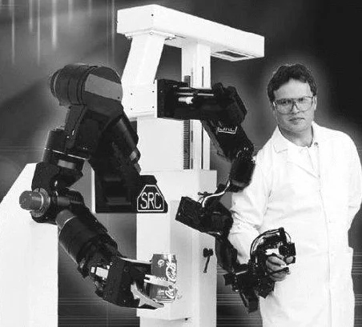

Étude technique bibliographique · 2001-2002
Cette partie correspond au chapitre D de l'étude. Elle traite des interfaces qui ne se contentent pas de recevoir une commande, mais qui mesurent le corps et lui renvoient des sensations. Le rapport distingue les interfaces purement sensorielles, qui envoient des stimuli, et les interfaces sensori-motrices, qui mesurent la position ou le mouvement tout en appliquant des forces, des vibrations ou des sensations thermiques. Cette distinction structure tout le chapitre et reste l'un de ses apports les plus solides.
Le texte décrit d'abord les gants de données et les exosquelettes partiels : capteurs de flexion, fibres optiques, résistances variables, retour tactile par vibration ou par pression, retour d'effort par moteurs ou par systèmes pneumatiques. Il examine ensuite les combinaisons de données, les exosquelettes complets et la capture de mouvement, avec des exemples de systèmes à marqueurs passifs ou actifs, de caméras infrarouges et de dispositifs comme le Cyberdôme. Viennent enfin les manettes, souris et trackballs à retour de force ou tactile, puis les interfaces physiologiques : électromyogramme, électrooculogramme, électroencéphalogramme et électrocardiogramme, avec le système BioMuse et ses huit signaux acquis en temps réel.
Ce qui a vieilli, ce sont les prix, les références commerciales et la puissance des stations nécessaires. Ce qui reste utile, c'est la description des chaînes de mesure et de restitution, et l'insistance sur la calibration. Un gant ou un exosquelette ne fonctionne que si l'on connaît la morphologie de l'utilisateur, si l'on ajuste les seuils et si l'on accepte un temps de préparation. Le rapport le dit sans détour : l'immersion corporelle a un coût matériel, un coût temporel et un coût d'encombrement. Vingt-quatre ans plus tard, ces contraintes n'ont pas disparu, même si le matériel est devenu plus léger et moins cher.
Le PDF reproduit le document Word de 2001-2002, images et schémas compris.
Texte original de 2001-2002, non réécrit. Le résumé et le sommaire de cette page ont été écrits en 2026. Le PDF reproduit la mise en page du document Word d'origine.